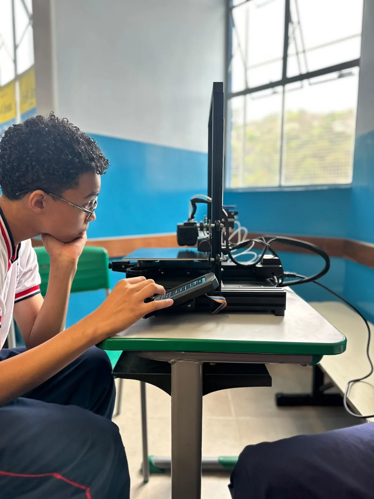

Aliança Vencedora
Uma conquista construída em conjunto.
EQUIPE ÓRION · CAETÉ, MG
Somos estudantes da E. E. Presidente Tancredo Neves. Aprendemos a criar soluções com programação, engenharia e trabalho em equipe.
Nossa equipe em 2026NOSSA HISTÓRIA
Os primeiros projetos e a formação da equipe.
Foi entre os primeiros projetos e desafios que descobrimos o que significa ser uma equipe: dividir tarefas, ouvir ideias, errar, ajustar e tentar de novo.
Cada experiência ajudou a construir a identidade da Órion — e a vontade de seguir criando.
SEGUNDA TEMPORADA · 2026
A nova formação continua essa história com mais experiência, criatividade e vontade de construir. Nosso projeto ganha forma quando cada integrante contribui.
Organização das atividades, comunicação e acompanhamento do projeto. A gestão conecta as áreas e ajuda a equipe a avançar em conjunto.
Desenvolvimento da lógica que orienta o robô. A programação transforma os objetivos do projeto em comandos, testa respostas e ajusta o comportamento do sistema.
Construção e evolução física do projeto. A engenharia reúne montagem, mecanismos e testes para transformar uma ideia em um robô pronto para os desafios.

NOSSAS CONQUISTAS
Uma conquista construída em conjunto.
Ideias aplicadas ao desenvolvimento do projeto.
Entre os finalistas da competição.
Um marco na trajetória da equipe.
QUEM CAMINHA COM A ÓRION
NOSSOS CANAIS
Acompanhe os projetos ou fale diretamente com a equipe.